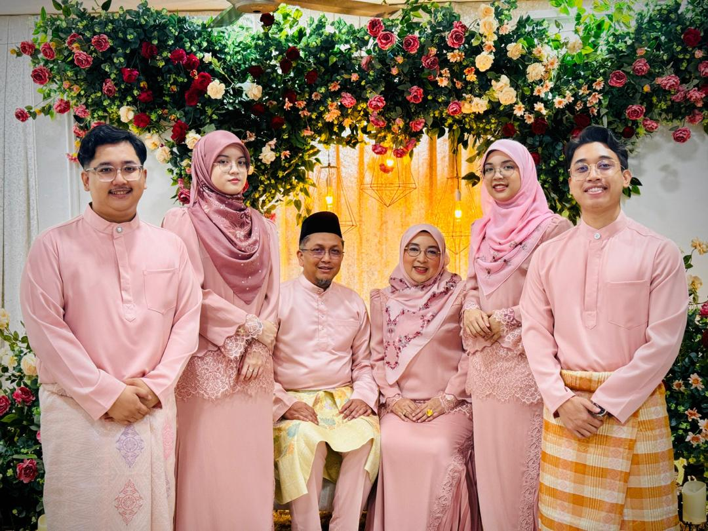

>FAMILY IS THE BOND THAT HARDLY WANT TO PERISH<
Introducing my family that consist of 6 members including me
with proper gender balance of males and females. First we have
my father, he’s a doctor with his own clinic and take care of it
with my mother which she works as the manager there. They both
started to work together after my mother made a choice to retired
6 years early because of a certain tragedy in her office. so far,
they’re doing good and strong. Good for them I think.
Next is, my brothers; they’re both in the same university but first
brother just graduated since 2023 (if I remember correctly) while my
second brother is still having one more semester in his degree. Oh yes,
they both also took the same course which is engineering but first brother
is in technical while second one into civil. Lastly is my little sister,
a little fact! We both used to be called as twins but yeah her skin got
darker while mine getting sicker, her eyes getting browner while mine darker
and of course, she’s smaller now so we’re not so twinning anymore. Anyways,
she currently studying to get into the dentist course (even though she’s not
into it) and 2 or 3 weeks more to end her journey in her university. Please
pray for her.